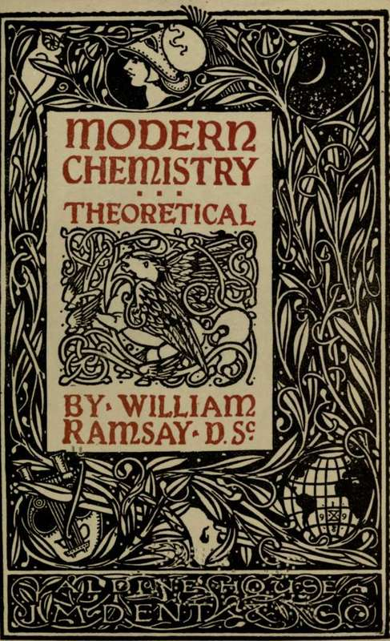
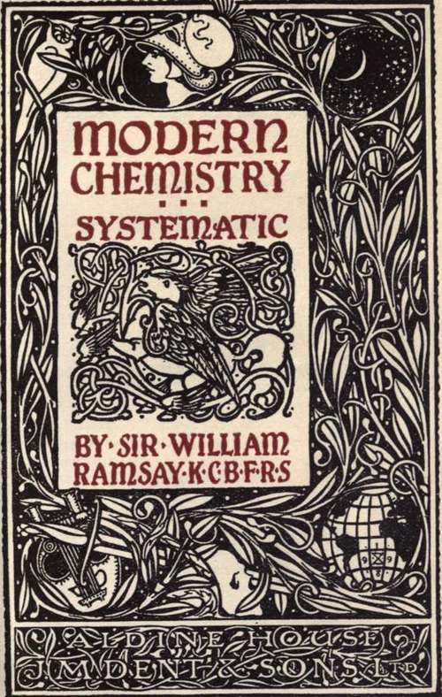

Modern Chemistry | by William Ramsay
An introductory set of chemistry books by the great Ramsay him self. The two volumes are suitable for beginners as well as intermediates due to it's simple language and explanations.
| Title | Modern Chemistry |
| Author | William Ramsay |
| Publisher | The Temple Primers |
| Year | 1912 |
| Copyright | 1912, The Temple Primers |
| Amazon | Modern Chemistry: Theoretical and Modern Chemistry (Volume 2) |
By William Ramsay, D.Sc.
Part I: Theoretical Chemistry
 Chapter Introductory
Chapter Introductory- One of the earliest questions asked by an intelligent child is : What is this made of? What is that made of? And the answer is generally more or less satisfactory. For example, if the question r...
- Elements
- One of-these speculations was that things which we see around us were built up out of elements, just as a word is built up out of letters. Indeed, the word elemens, which is the Latin word for eleme...
- Phlogiston
- Stahl devised a new name for this combustible constituent of substances, in order better to direct attention to his new idea; he called it phlogiston, a word which may be translated burnableness/...
- Oxygen
- This last statement explains the name which he gave to Priestley's and Scheele's gas, namely oxygen, a word derived from two Greek words, signifying acid-producer. The compounds of this substance h...
- Combining Proportions
- It became evident, chiefly owing to the work of two German chemists, Wenzel and Richter, that when an acid, such as vitriol or vinegar, is mixed with a base, such as potash, and neutralised, as the ex...
- Dalton's Laws
- The Law Of Definite Proportions When two or more elemerts combine with each other to form a compound, thty combine in constant proportions by weight. The Law Of Multiple Proportions When two ...
- Gay Lussac's Law Of Volumes
- Stated in the form of a law, Gay-Lussac's discovery was :—The weights of equal volumes of both simple and compound gases are proportional to their combining weights (or, to use Dalton's term, their at...
- Avogadro's Hypothesis
- Substances consist of two kinds of particles, each of which has been termed an atom by Dalton. But they are in reality different. The smallest particle, or, as Avogadro named it, molecule, of water, c...
- Atomic Weight
- This is usually expressed by the phrase—the atomic weight of oxygen is 16; for the atomic weight of hydrogen, being the smallest known, was taken as the unit. The relative weight of a molecule can ...
- Molecular Weights
- This is usually expressed by saying that the molecular weight of water is 18 ; and inasmuch as it consists of two atoms of hydrogen in union with one atom of oxygen, the weight of a molecule of water-...
- Dulong And Petit's Law
- Let us now consider the discovery of Dulong and Petit, already alluded to. In 1819 they made the announcement that the atoms of simple substances, or elements, have equal capacity for heat. It must be...
- Equivalent
- Now, i gram of hydrogen combines with 8 grams of oxygen in water ; and 8 is therefore chosen as the equivalent of oxygen ; for the definition of an equivalent is that amount of an element which will c...
- Isomorphism
- A third method of arriving at the correct atomic weight of an element was suggested in 1819 by Eilhard Mitscherlich, then Professor in Berlin. When two substances crystallise in the same crystalline f...
- Chapter II. Gaseous And Osmotic Pressure. Boyle's, Gay Lussac's, Pfeffer's, And Raoult's Laws
- If we grant, in accordance with modern views, that matter consists of minute particles, termed molecules, it must also be allowed that the distance between these ultimate particles must be very differ...
- Boyle's Law
- The law relating to the compressibility of gases was discovered by Boyle. It is, that if temperature be kept constant, the volume of all gases is inversely as the pressure. Thus, if the pressure of th...
- Gay Lussac's Law
- The law connecting the volume of a gas with the temperature was discovered by Gay-Lussac, and independently by Dalton; but it is generally attributed to the former chemist. It is :—Provided pressure b...
- Pressure Proved By Diffusion
- When a solid is dissolved in a liquid, as, for example, sugar in water, the particles of sugar — its molecules — must obviously be separated from each other to a greater or less extent, according as m...
- Dalton's Law Of Partial Pressures
- Suppose a vessel of one litre capacity to be filled with oxygen gas at 0, and under the atmospheric pressure of 76 centimeters of mercury. The oxygen will exert pressure on its walls equal to tha...
- Osmotic Pressure
- The partial pressure of the dissolved substance in a solution has been measured by a similar plan, devised by the German botanist Pfeffer. It was necessary for this purpose to discover a semi-permea...
- Measurement Of Osmotic Pressure By Lowering Of Freezing Point
- All pure substances have a perfectly definite melting-point; thus, ice melts at o C, sulphur at 1200, tin at 2260, lead at 325% and so on. These temperatures are also the freezing-points of the l...
- Measurement Of Osmotic Pressure By Rise Of Soiling Point
- A method for determining the molecular weights of substances by the rise of boiling-point of their solutions was also devised by Beckmann, and it is frequently used. The process is analogous to that i...
- Chapter III. Dissociation
- Dissociation A certain number of substances are known which apparently do not conform to the laws which have been explained in the last chapter. For example, the compound of ammonia with hydrochlor...
- "Dissociation" Of Salts In Solution
- Few measurements of the osmotic pressure of salts have been made, owing to the difficulty in producing a membrane which shall allow water to pass, and which shall be impermeable to salts. But very num...
- Electrolytic Conductivity Of Salt Solutions
- This hypothesis, that a kind of dissociation takes place in salt solution, might have failed to gain acceptance had it not been for a very remarkable coincidence. It appears that all solutions which s...
- Faraday's Law
- It was discovered in 1833 by Michael Faraday, Professor of Chemistry in the Royal Institution in London, that if an electric current be passed simultaneously through differentsolutions, the weights of...
- Hittorf's Migration Constants
- The fact that ions move at different rates can be demonstrated in two ways, one direct, the other indirect. The indirect method was devised by Hittorf; the direct method, which is much more recent, wa...
- Measurement Of The Extent Of Ionisation
- It is found in practice, however, that the conductivity of salts agrees with the numbers deduced from the velocity of their ions only when the solution is a very dilute one, and even then not always. ...
- Conductivity Of Electrolytes
- To measure the conductivity of a solution, a gram-molecular-weight, i.e. the molecular weight of the salt taken in grams, is dissolved in a litre of water. A small quantity of this solution is place...
- Conductivity Of Pure Water
- Two points remain to be mentioned. One has reference to the conductivity of pure water. It is no easy matter to prepare pure water; even after the water has been distilled, it contains traces of subst...
- Conductivity Of Fused Salts
- Another fact which is well known, and largely put to practical use, is that fused salts are, as a rule, good electrolytic conductors of electricity. Even when the salt is as pure as it can be made, it...
- Chapter IV. Elements. Compounds
- Elements:—Methods of Preparation; Classification ; Valency. Compounds:—Structural Formulas; Classification; Nomenclature. We have seen, in Chapter L, how the idea of an element as a constituent...
- Methods Of Preparing Elements
- There are three methods by which elements have been prepared, and all elements have been made by one of these methods. They are:— (1). Separation Of The Element By Means Of An Electric Current W...
- Classification Of Elements
- For long it had been noted that certain elements displayed a marked similarity with each other. Thus the metals sodium and potassium, discovered by Sir Humphry Davy, are both white, soft, easily oxidi...
- Valency
- The Roman numerals below the vertical columns refer to what is termed the valency. An element capable of combining with or replacing one atom of hydrogen, or, in other words, of which the equivalen...
- Classification Of Compounds
- 1. Hydrogen combines with a few elements, forming hydrides. 2. Fluorine, chlorine, bromine, and iodine combine with most elements, forming jluorides, chlorides, bromides, and iodides ; this group o...
- Nomenclature Of Compounds
- The nomenclature of this class of bodies is due to a committee of which Lavoisier was a member. After his discovery of the true nature of oxygen, he was led, not unnaturally, to ascribe to it the chie...
- Chapter V. Methods Of Determining The Equivalents Of The Elements Of Ascertaining their Molecular Weights—Allotropy
- The meaning of the word equivalent has already been explained on p. 15, and we shall now consider how the equivalent of an element may be determined. As already stated, some compound of the element...
- Methods Of Determining The Equivalents Of Elements
- It is not always necessary to determine both constituents of the compound; for example, the ratio of silver to chlorine can be found by dissolving a known weight of pure silver in nitric acid, and the...
- Vapour Densities Of Elements
- For reasons already explained on page 13, a molecule of oxygen is believed to contain two atoms, and inasmuch as the equivalents of most elements have been determined with reference to oxygen, by anal...
- Lowering Of Freezing-Point, Or Lowering Of Vapour Pressure Of Solvent
- The molecular weights of some of the elements have been determined by Raoult's method, either by the lowering of the vapour-pressure of mercury, or by the depression in the freezing-point of some othe...
- Allotropy
- Closely connected with this question is the phenomenon of allotropy. This word, which signifies other form, is applied to the existence of elements in more than one condition. Thus phosphorus, whic...
- Allotropy. Continued
- Antimony The usual form of antimony is a white brittle metal with a faint bluish tinge. If deposited from a strong solution of its chloride by electrolysis, a grey powdery deposit is formed, which ...
- Phases Of Elements
- We know that a liquid and its gas can exist together at different temperatures, and that at high temperatures the gas exerts a greater pressure than at low. To each temperature corresponds a definite ...
- Chapter VI. Isomerism. Polymerism
- Optical and Crystal-lographic Isomerism—Stereo*Isomerism— Tautomerism. Closely connected with allotropy is what is termed isomerism. Attention was first called to the existence of compounds with id...
- Isomerism. Polymerism. Part 2
- The new gas is called ethane. It, too, exists in only-one modification, and it is legitimate to suppose that the atoms of hydrogen are symmetrically arranged with reference to the two atoms of...
- Isomerism. Polymerism. Part 3
- Acetonitrile. Acetic Acid. It is seen to be closely allied to acetic acid, in which three of the atoms of hydrogen of ethane are also replaced ; but this time two by an atom of oxygen, a...
- Stereo Chemistry
- The deposit found in wine-casks, named tartar or argol, is the potassium salt of four acids, to which the generic name tartaric has been given. But it has long been known that although all these acids...
- Stereo Chemistry. Part 2
- Fig. 4. The case is otherwise with crystals of tartaric acid. While one variety of tartaric acid crystal rotates the plane of polarisation to the right, in the direction of the hands of a watch...
- Stereo Chemistry. Part 3
- a group common to all the acids of carbon, and already shown on p. 94 as part of the formula of acetic acid. The ordinary lactic acid of sour milk is optically inactive, but its isomer extracted from ...
- Stereo Isomerism Due To Double Linkage
- There is another variety of stereo-isomerism which cannot be detected by the rotation of polarised light. It is assumed that in such a compound as tartaric acid (see Fig. 7), the two tetrahedra, shown...
- Tautomerism
- One more kind of isomerism remains to be mentioned ; a body which is said to be tautomeric appears to show a different constitution, according to the reagent with which it is treated. One of the earli...
- Chapter VII. Energy
- We have seen in the last chapter that some conception can be made regarding the form of molecules, supposing them to occupy space of three dimensions. It is further imagined that the atoms in the mole...
- Energy. Part 2
- The opposite is the case with endothermic compounds ; the amount of heat absorbed by the union of their constituents is less the higher the temperature ; and when the temperature surpasses a certain p...
- Energy. Part 3
- Many measurements of the heat evolved or absorbed during chemical reactions have been made, chiefly by M. Berthelot and by Professors Julius Thomsen and Stohmann. The reaction under investigation is c...
Part II: Systematic Chemistry
- Chapter I. Methods Of Preparing Elements-Their Physical Properties
- Mixtures And Compounds In the olden days, no distinction was drawn between a compound and a mixture. Indeed, all impure 99 substances artificially prepared were termed mixts.. It was only after...
- The Atmosphere
- In the case of mixtures of gases, the problem becomes an easier one. For in this case, each gas retains its individual properties. The atmosphere, for example, is believed to be a mixture of the gases...
- The Helium Group
- These elements are all gases at the ordinary temperature of the atmosphere, and they are consequently all to be found in atmospheric air. They are colourless, even in the liquid condition, and are dev...
- Methods Of Separating Elements From Their Compounds
- The methods of preparation of the remaining elements depend on considerations of the cost of the compound from which the element is to be prepared, and on the ease of preparation. In the case of th...
- Separation Of The Element By Means Of An Electric Current
- (A) From A Fused Salt One condition is that the salt shall fuse at a convenient temperature-that is, at or below a red heat. Another is that, in the case of metals which are commercially used, the ...
- Separation Of An Element From A Compound By Rise Of Temperature
- This method is applied in practice only to the preparation of oxygen, and of chlorine, bromine, and iodine; but many other elements may be thus made, where the compound heated does not tend to re-form...
- Separation Of An Element From A Compound By Displacement
- This is by far the most general method of preparing elements. The elements commonly used as displacing agents are :- (A) Hydrogen At A Red Heat The oxide or chloride is placed in a tube of hard ...
- Separation Of An Element From A Compound By Displacement. Part 2
- Sodium A mixture is made of spongy iron (see p. 19) and pitch. This mixture is heated to redness in order to decompose the pitch, which consists of compounds of carbon and hydrogen. These compoun...
- Separation Of An Element From A Compound By Displacement. Part 3
- The preparation of nitrogen may be also regarded as a displacement by means of oxygen. Ammonia burns In oxygen, thus: 3NH3 + $O2= 3H2O + N2, but at the same time some of the nitrogen unites with the o...
- Separation Of An Element From A Compound By Displacement. Part 4
- Metallic iron, manganese, cobalt, and nickel at a red heat remove oxygen from water with liberation of hydrogen: 3Fe + 4H2O = Fe3O4 + 3H2; 2C0 + 2H2O = CoO + O2. Conversely, a current of hydrogen pass...
- The Properties Of The Elements
- It has been customary to divide the elements into two classes, the metals and the non-metals. As we have seen, this classification is a completely arbitrary one; for there are some elements capable of...
- Chapter II. Classification Of Compounds
- Compounds of the elements may be divided conveniently into six classes:- The Hydrides; The Halides; The Oxides and Sulphides (with Selenides and Tellurides) ; The Nitrides and Phosphides (wit...
- Classification Of Compounds. Part 2
- Hydrogen also combines with sulphur when passed through a flask containing boiling sulphur, and sulphuretted hydrogen, H2S, decomposes when raised to a low red heat. Interesting relations a...
- Classification Of Compounds. Part 3
- (*/) Most of the hydrides can be prepared by the fourth method-the interaction of compounds. The decomposing agent is either water, an acid, or an alkali. ( i) Water :-Marsh-gas, CH4, ethylene, C2H...
- Acids
- Hydride of fluorine, chlorine, bromine, and iodine, when dissolved in water, are termed acids. As already mentioned, this name was originally applied to compounds which possess a sharp taste and cha...
- General Nature Of The Hydrides
- Hydrides of lithium, sodium, potassium, iron, nickel, palladium, and platinum differ from the others in character ; they are solid bodies, decomposed by heat. Graham, indeed, who investigated that of ...
- Hydrocarbons
- The hydrides of carbon, or hydrocarbons, are very numerous, and form an important group of substances. In many respects they are analogous to the metals, and they yield derivatives comparable with ...
- Chapter III. The Halides Of The Elements-Double Halides -Endothermic Combinations-Hydrolysis -Oxidation And Reduction-Mass-Action
- The Halides Compounds of fluorine, chlorine, bromine, and iodine are thus named. They fall into classes when the elements are arranged according to the periodic system. Taking the chlorides as typi...
- Water Of Crystallisation
- The other halides of this group crystallise with water of crystallisation; its amount varies from 7 molecules, as in BaI2.7H2O, to 1 as in ZnCl2.H2O. The retention of this so-called water of crystal...
- Water Of Crystallisation. Continued
- The sulphurous acid removes oxygen from water, liberating hydrogen in presence of the cupric chloride, and the latter is deprived of half its chlorine and reduced to cuprous chloride. Similarly, s...
- Endothermic Combination
- This body is fearfully explosive, for its formation is attended by great absorption of heat ; but during its formation the reagents do not grow cold ; for the formation of ammonium chloride is a highl...
- Valency Of Elements
- We may remark here the gradual increase of valency as we pass from left to right in the periodic table. Lithium is a monad, with its congeners; the elements of the beryllium group are dyads; boron a t...
- Mass-Action
- The action of mass, that is, the quantity of a compound in unit volume, is well illustrated by the action of water on antimonious chloride. A solution of this salt in hydrochloric acid gives a precipi...
- Oxidation And Reduction
- As already remarked, the raising of the valency, or, what is the same thing, the removal of electrons from an element, is often spoken of as oxidation ; the reducing of the valency, or the addition...
- Colour Of Ions
- The triad and dyad ions in the case of these metals exhibit remarkable differences of colour. Thus chromous ions are blue, chromic, green ; basic ferric ions are orange-yellow, ferrous, pale green; ma...
- Ammonium And Phosphonium Halides
- These halides, which are formed by direct addition of the hydrogen halide to ammonia or to phosphine, closely resemble in colour, in crystalline form (cubic), and in reactions, the halides of the lith...
- Chapter IV. Hydroxides And Acids-"Insoluble Substances"- Indicators
- Preparation of Basic Oxides-Pro* perties of the Basic Oxides and Hydroxides-Sulphides - The Solubility-Product - Basic Oxides and Hydroxides of Complex Groups: Alcohols, Aldehydes, Ethers; and Sulp...
- Hydroxides And Acids
- Members of both these classes may be regarded as hydroxyl, that is, water minus one atom of hydrogen, OH, in combination with elements, but they differ radically in that the true hydroxides ionise int...
- Insoluble Substances
- The hydroxides are, with some exceptions, generally spoken of as insoluble in water. The word soluble is a relative term; it is probable that very few, if any, substances are absolutely insoluble. ...
- Indicators
- The most important indicators are litmus, phenol-phthalein, and methyl-orange. Litmus is a weak acid, red in colour, the salts of which are blue. When dissolved in water, the molecule is hardly at all...
- Preparation Of Basic Oxides
- The hydroxides of the metals of the sodium group, as already mentioned, do not lose water on heating, and the oxides, therefore, cannot be thus obtained. Neither do their carbonates lose carbon dioxid...
- Properties Of The Hydroxides
- As regards the properties of the hydroxides, that of copper (cupric) is light blue, and of silver, brown ; chromic hydroxide is grey-green, and chromous, yellowish; manganic, brown, and manganous, ver...
- Sulphides And Hydrosulphides
- The analogy between the elements oxygen and sulphur is well shown by comparing the sulphides of the elements of which the oxides have been described. Elements of the lithium group form both hydrosulph...
- Solubility-Product
- It has already been mentioned on p. 14 that the rate of chemical change depends on the amount of each of the reacting substances present in unit volume. This last is generally termed the concentrati...
- Oxides And Hydroxides Of Complex Groups
- The oxides and hydroxides of complex groups show analogy in their formulas, and often in their methods of preparation with the basic oxides and hydroxides. A few instances of these will now be given. ...
- Alcohols
- The hydroxides of the hydrocarbon radicles are, as mentioned on p. 67, termed alcohols.1 Of these there are very many, but a few only will be chosen to serve as examples: methyl alcohol, CH3OH, ethyl ...
- Aldehydes
- The alcohols, if oxidised by boiling them with chromic acid, yield a class of bodies analogous to the oxides, termed aldehydes: CHg-CH2-OH + O = (CH3 - CH)0 + H2O. It will be noticed that ethane, CH3...
- Amines And Phosphines
- Derivatives of nitrogen, phosphorus, sulphur, and even of iodine and of oxygen, containing hydrocarbon groups, are however known, which are true bases, though weak ones. If ammonia in alcoholic soluti...
- Ethers
- Oxide of methyl and oxide of ethyl, which are usually named methyl and ethyl ethers, are formed by mixing solutions in alcohol of methyl or ethyl iodide with sodium methoxide or ethoxide : CH3I. Ale +...
- Chapter V. Neutral Oxides-Peroxides
- The properties of all chemical compounds show gradation ; and there is a slow transition from basic oxides and hydroxides, like those which we have been considering in the last chapter, to acid oxides...
- Peroxides
- In the potassium .and calcium groups of elements, peroxides are known. When sodium is burned in air a light yellow powder is formed, sodium dioxide, of the formula Na2O2; potassium and caesium yield y...
- Neutral Oxides, Class I
- The next neutral oxides met with are carbon monoxide, CO, nitrous oxide, N20, and nitric oxide, NO. These are all gases, but condense at low temperatures to colourless liquids, and at still lower, fre...
- Action Of Nitric Acid On Metals
- The product of the action of nitric acid on metals varies according to the metal acted on, the concentration of the acid, and the temperature. The acid in aqueous solution is more or less ionised, the...
- Oxidation By Means Of Nitric Acid
- Action of the same nature occurs when an element capable of changing its valency, i.e. the number of electrons associated with its ionised atom, is treated in the ionic condition with nitric acid. For...
- Neutral Oxides, Class II
- The next class of oxides comprises those which may be termed neutral, because they can act either as bases or as acids, according as they are treated with an acid or with a base. Their hydroxides may ...
- Spinels
- A considerable number of compounds, analogous to the aluminates, is produced in this way, and many of them are found in nature as minerals. To this class belong the 14 spinels, so called because one ...
- Chapter VI. Basic Salts
- Many compounds are known which are at the same time chloride and oxide, or chloride and hydroxide of elements. Where the element with which the oxygen and chlorine is combined is one which forms a bas...
- Borates
- In certain lakes in California the water, when evaporated, deposits crystals of the formula NagB^^. ioH2O ; this substance is named borax. It is a white, crystalline salt, easily soluble in hot water,...
- Carbonates And Thiocarbonates
- The carbonates and the thiocarbonates are derivatives of carbon dioxide (or rather of carbon oxy-hydroxide, commonly called carbonic acid), and of carbon disulphide. Carbon is a tetrad, and the analog...
- Thiocarbonates
- The sulphocarbonates, or thiocarbonates (from the Greek theion, sulphur) form a class of salts analogous to the carbonates, both in their formulas and in the method of their preparation. Carbon disulp...
- Acids Containing Carbon
- An enormous number of acids containing carbon is known, in which the acidic carbon atom is combined with oxygen and hydroxyl, and also with hydrocarbon residues, such as methyl or ethyl, or with some ...
- Silicic Acids And Silicates
- While the characteristic of carbon is to form compounds in which many atoms of carbon are linked together (hydrocarbons, for example, having formulas like '. , atoms of silicon are characterised by...
- Osmosis
- To separate the ions of sodium chloride and of hydrochloric acid advantage is taken of a discovery made by Graham, that a vegetable or animal membrane like parchment or parchmentised paper is readily ...
- Orthosilicates
- These are orthosilicates; the comma between the Mg and the Fe means that these metals can replace each other in any proportions. Xenolite, it will be observed, is the silicate of a triad metal, alumin...
- Metasilicates
- Metasilicates are derivatives of the acid H2SiO3; the constitutional formula is 0=Si(OH)2, like that of carbonic acid. Examples of metasilicates are:- Wollastonite. Augite or Hornblende....
- Disilicates
- The molecules of orthosilicic acid may lose one molecule of water, the remaining atom of oxygen of the two hydroxl groups serving to unite the two molecules together, and a similar loss of water may b...
- Chapter VII. Anhydrides, Acids, And Salts
- Phosphoric, Vanadic, Arsenic, and Antimonic Acids -Nitrous, Phosphorous, Arsenious Acids-Phos-phatic Acid-Hyponitrous and Hypophosphorous Acids, and their Salts. The remaining hydroxides, which all...
- Elements Of Odd Valency
- The highest valency shown by elements of the nitrogen group, apart from a somewhat questionable pernitric acid, is five. This is illustrated by the formulae of the pentoxides, N2O5, P2O5, As2O5, Sb2O5...
- Basicity
- The basicity of these acids is deduced from the formulas of double salts. Thus, there are three ortho-phosphates of sodium and hydrogen; they have the formulae H2NaPO4, HNa2PO4, and Na3PO4 ; the hydro...
- Metaphosphoric Acids
- The formula of the third anhydride of the di-acid, H2Z2O6, given on the preceding page, is a multiple by two of that of the meta-acid, and it is evident that the fourth anhydride of the tri-acid, the ...
- Nitrates
- The nitrates are all soluble salts, possessing the colours of their metallic ions. As a rule, they crystallise easily. They are all decomposed by heat; those of the metals of the alkalies into nitrite...
- Phosphates
- The source of phosphoric acid and the phosphates is chiefly calcium phosphate, Ca3(PO4)2, a mineral known as phosphorite, and A1PO4, aluminium phosphate, or gibbsite. Phosphoric acid is produced from ...
- Arsenates
- ine important arsenates correspond exactly in formula and crystalline form to the phosphates ; the only striking difference is in the colour of the silver salt; while ortho-phosphate of silver is yell...
- Vanadates
- Ortho-vanadates are prepared by fusing vanadium pentoxide with the required amount of a carbonate; on addition of nitric acid to one of its salts, metavanadic acid separates out as a brown-red powder ...
- Thio'Acids
- Thio-compounds are known, analogous to these salts. Mention may be made of mixed oxy-thio-phosphates, e.g. Na3PO3S and Na3POS3, which result from the action of alkaline hydroxides on phosphorus penta-...
- Pyrophosphoric Acid
- When hydrogen di-sodium orthophosphate is heated to redness, water is lost, and tetra-sodium pyrophosphate is left as a white deliquescent mass: 2HNa2PO4 = Na4P2O7 + H2O. This salt is soluble in water...
- Meta- Salts
- On heating to redness di-hydrogen sodium orthophosphate, H2NaPO4, or microcosmic salt, H(NH4)NaPO4.4.H2O, water, or, in the latter case, ammonia in addition, is lost, and the residue consists of sodiu...
- Compounds Containing Less Oxygen
- The elements of the nitrogen group are characterised by their possessing more than one valency. They are also, in most cases, capable of forming compounds with hydrogen. These two characteristics, tak...
- Phosphorous Acid
- We shall first consider numbers (5) and (10). In phosphorous trichloride, PC13, phosphorus is undoubtedly a triad. On heating this compound to 6o, and passing over it a current of dry air, and su...
- Constitution Of Phosphorous Acid
- Phosphorous trichloride, if treated with a solution of sodium ethoxide, Na( OC2H6), in alcohol, yields tri-ethyl phosphite, (C2H5)3PO3 or P(OC2H5)3, corresponding to P(OH)3. It is a liquid, boiling at...
- Arsenites
- Arsenites, derived from the acid H3AsO3, such as hydrogen cupric arsenite or Scheele's green, HCuAsO3, produced by adding to a solution of copper sulphate potassium arsenite, arsenious oxide, and a...
- Hypophosphites
- Hypophospnorous acid, H3PO2, is a monobasic acid ; sodium hypophosphite has the formula Na(H2PO2). This leads to a formula analogous to that given in (11). When heated, too, the acid yields phosphine ...
- Chapter VIII. The Oxy-Acids Of The Halogens
- The formulae of the acids of the halogens present some analogy with those of the nitrogen group, for, like the latter, the halogens also possess uneven valency. But while the highest valency of elemen...
- Hypochlorites
- The starting-point for these compounds is the hypohalite ; it is produced by the action of a hydroxide on the element in cold aqueous solution, thus : 2NaOH.Aq + Cl2, Br2, or I2 = NaCl, NaBr, or Nal.A...
- Chlorates
- Hypochlorites, when heated, undergo conversion into a mixture of chlorate and chloride: jNaOCLAq = NaClOg.Aq + zNaCLAq. The usual method of preparing chlorates, however, is to pass a current of chlori...
- Perchlorates
- On ceasing to apply heat after the chlorate has become pasty, and treating with water, the potassium chloride is dissolved, leaving the much less soluble perchlorate; the perchlorate may be purified b...
- Chlorine Peroxide
- The solution, freed from barium by filtration, may be concentrated by distilling away the water at a low temperature in a vacuum ; the acid remains as a colourless, syrupy liquid, which decomposes at ...
- Hypobromites
- Hypobromites are produced, along with bromides, on mixing solutions of alkalies with bromine; the solution turns yellow, and acquires a smell like that of seaweed. On warming, a change analogous to th...
- Bromates
- The bromates are white salts soluble in water; they do not, however, decompose into bromide and perbromate when heated; the perbromate is unstable, and bromide and oxygen are the only products. Bromic...
- Hypoiodites
- The formation of hypoiodites is analogous to that of hypochlorites; but the salts are known only in solution mixed with iodide. Again, like the hypochlorites, they change on heating; they yield a mixt...
- Iodic Acid
- Iodic acid is a white crystalline compound, easily soluble in water ; it is a strong acid, and its salts are produced by neutralisation with hydroxides or carbonates. When it is mixed in solution with...
- Periodic Acid
- The oxidation of iodic acid to periodic acid is accomplished by means of a solution of sodium hypochlorite; it is easier to dissolve iodine in a solution of sodium carbonate, when hypoiodite is formed...
- Thermal Data
- From the short description which has been given, it is seen that the oxides of iodine and their compounds are, as a rule, more stable than those of bromine and chlorine, and this is connected with the...
- Acids Derived From Elements Of Even Valency
- Elements of the molybdenum and of the sulphur groups can act as dyads, tetrads, and hexads, and there are corresponding compounds of chromium, manganese, and iron, while sulphur and manganese are also...
- Oxides Of Sulphur, Selenium, And Tellurium. The Corresponding Acids
- When sulphur, selenium, or tellurium is heated in air, the element takes fire and burns ; the chief product in each case is the dioxide. That of sulphur is a colourless gas, possessing the well-known ...
- Isomeric Sulphites
- The evidence is this:-Sulphur alcohol or ethyl-hydrosulphide (also termed mer-captan), when oxidised by boiling with dilute nitric acid, is converted into ethyl-sulphonic acid, thus: , a mo...
- Acid Chlorides
- Sulphur dioxide combines with chlorine when a mixture of the two gases is exposed to sunlight, or when it is passed over gently heated charcoal. The product, sulphuryl chloride, , is a colourle...
- Chromates
- The starting-point for the chromates is chrome iron ore, Fe(CrO2)2, a spinel (see p. 100). It is heated in a powdered state with a mixture of lime and potassium carbonate, in a reverberatory furnace, ...
- Chromic Acid
- Chromic acid is liberated on adding to a concentrated solution of potassium anhydrochromate a sufficient excess of sulphuric acid : K2Cr2O7. Aq -f H2SO4 = K2SO4.Aq + H2O + 2CrO3. The acid, in concentr...
- Manganates
- Oxides of manganese, if heated with caustic alkalies in a current of air, or with potassium or sodium nitrate, are converted into manganate ; the manga-nate, however, is much more easily decomposed th...
- Permanganates
- While the manganates are bright green, the permanganates, which are analogous to the per-chlorates, are almost black ; they dissolve in water with a deep purple colour ; the best known is the potassiu...
- Equations Simplified
- A word may be added here with regard to the somewhat complicated equations such as those given. It is convenient to assume the existence of the anhydride of the acid as a constituent of the salt; thus...
- Molybdates, Tungstates, And Uranates
- The formulae of the molybdates, tungstates, and uranates are analogous to those of the chromates; for example, K2MoO4, Na2WO4, (NH4)2UO4. The common ore of molybdenum is the disulphide, crystalline sc...
- Sulphur Trioxide
- The constitution of sulphuryl chloride and its conversion into sulphuric acid has already been alluded to. And it may be assumed that that of sulphur trioxide, SO3, is expressed by the formula , s...
- Sulphuric Acid
- The product on dissolving sulphur trioxide in water is sulphuric acid, H2SO4; if smaller quantities of water be used than are necessary for the formation of H2SO4, various pyro- or anhydro-sulphuric a...
- Oxidising Action Of Sulphuric Acid
- Sulphuric acid can behave as an oxidising agent, being itself reduced. This change is produced when it is heated with most other elements. Thus with carbon, C + 2H0SO4 = CO2 + 2SO2 + H2O; with sulphur...
- Selenic Acid
- Selenic Acid, H2SeO4, is also a colourless syrupy liquid; it can be produced by direct oxidation of selenium by chlorine water, but on concentration the resulting hydrochloric acid reduces the selenic...
- Telluric Acid
- Telluric acid is prepared from its barium salt suspended in water, with the requisite amount of sulphuric acid; the barium salt is produced by heating tellurium with barium nitrate. On evaporation, th...
- Sulphate, Selenates, And Tellurates
- The sulphates, selenates, and tellurates of barium are nearly insoluble in water; those of strontium and lead are very sparingly soluble, and those of calcium are still sparingly soluble, though more ...
- Salts Of Alky I Radicals
- Salts of the alkyl radicals are as a rule volatile ; they are produced by distilling the alcohols with the respective acid. Ethyl nitrite, for example, is formed by distilling a mixture of alcohol, so...
- Thiosulphates
- Some other acids of sulphur remain to be noticed. Among these is thiosulphuric acid, H2S2O3, of which the sodium salt is produced by digesting together sodium sulphite with sulphur, just as, with oxyg...
- Iodometry
- A solution of sodium thiosulphate containing 248 grams, made up to a litre with water, reacts quantitatively with one containing 127 grams of iodine per litre ; the colour of the iodine disappears, an...
- Hydrosulphites
- Hydrosulphurous acid, H2S2O4, sometimes called hyposulphurous acid, is produced as zinc salt by the action of metallic zinc on sulphurous acid. The liquid turns brown, and possesses great reducing ...
- Highly Oxidised Acids
- Of recent years, a considerable number of salts of acids more highly oxidised than any of those already mentioned has been prepared. It has long been known that on addition of hydrogen dioxide to a so...
- Chapter IX. The Nitrides And Phosphides, Arsenides And Antimonides
- Analogy Between Oxides And Nitrides Nitrogen and phosphorus are best characterised by the compounds in which they act as triads. For just as an oxide or hydroxide may, as was customary during the e...
- Nitrides
- Lithium nitride, Li3N, is a dark-coloured substance; it is formed at the ordinary temperature on exposing metallic lithium to the air. Calcium nitride, Ca3N2, is a greyish-yellow substance; and magnes...
- Amines
- Substituted ammonia, in which one atom of hydrogen is replaced by an element, is the analogue of the hydroxides. Such bodies are termed amines or amides. Sodamine, NaNH2, is easily prepared by passing...
- Carbamates
- Ammonium carbamate, known by the familiar name of smelling salts, is formed by mixing ammonia and carbon dioxide gases: CO2 + 2NH3 = H2N - CO - ONH4. It is a white crystalline compound, soluble in ...
- Carbamide
- Urea or carbamide, to which the formula 0 = C(NH9)2 is generally ascribed, is the form in which by far the largest part of the nitrogen is evolved which is consumed as food by animals. It may be direc...
- Amides Of Acids Of Phosphorus
- Many compounds analogous to urea are known, where the hydroxyl groups of acids are replaced by amido-groups, -NH9. By the action of ammonia gas on phosphorus oxychloride ortho-phosphamide is formed : ...
- Amides Of Sulphur Acids
- Similarly, amido-derivatives can be obtained from sulphur trioxide. The action of ammonia on that compound yields ammonium sulphamate, , or, if less ammonia be used, sulphamic acid, HO-(SO2)-NH2; ...
- Salts Of Complex Amines
- Calcium chloride, exposed to a stream of ammonia gas, rapidly absorbs it, and forms the compound CaCl2.8NHg. It would appear that this compound is one of calcamine, Ca(NH2)9, with 2HCI, with which six...
- Chromamines And Cobaltamlnes
- Chromium hydroxide, when digested with excess of ammonia and ammonium chloride, forms a deep red solution; and on exposing it to air, a violet powder separates, of the formula CrCl3.4NH3.H2O. This pow...
- Other Amines
- Many compounds of copper, mercury, silver, gold, and the metals of the platinum group are known, which admit of representation in a similar manner. They differ, however, inasmuch as the metal must be ...
- Phosphides, Arsenides, And Antimonides
- A few compounds of phosphorus, arsenic, and antimony with metals have been made. They are generally obtained by direct union between the heated metal and the element. Thus, if sodium and phosphorus be...
- Hydrocyanic Acid
- Inasmuch as hydrocyanic or prussic acid is so very weak, it is displaced from its salts by the action of all other acids ; even carbonic acid can expel it. It may therefore be prepared by distilling...
- Isomeric Cyanides
- The formula of hydrocyanic acid can be represented in two ways. It is possible to conceive either the carbon or the nitrogen to be united with the atom of hydrogen. In the former case, the structural ...
- Ferro- And Ferricyanides
- Some of the double cyanides are of importance, both commercially and from a chemical standpoint. Among them is a substance which has already been mentioned, potassium ferrocyanide, K4Fe(CN)6. This...
- Chapter X. Borides And Carbides
- These compounds have been incidentally mentioned on p. 30; they have been investigated almost exclusively by Moissan and his pupils. Borides Calcium, strontium, and barium borides have been prep...
- Carbides
- Lithium carbide, Li2C2, is a white crystalline mass, produced by heating in the electric furnace a mixture of carbon with lithium carbonate; its formation is expressed by the equation: Li0CO3 + 4C = L...
- Alloys
- The word alloy was originally applied to mixtures of gold and silver with other metals; it now signifies any mixture or compounds of metals with each other; alloys of mercury are, however, termed ...
- Fusible Alloys
- Among the eutectic alloys, some are known as fusible alloys. Wood's alloy consists of two parts of tin, two of lead, seven or eight of bismuth, and one or two of cadmium; it melts at 66-7i&de...
- Chapter XI. Uranium, Radium, Thorium, And Actinium- Their Disintegration Products
- It was discovered in 1896 by Henri Becquerel that uranium and its salts, when placed on a photographic plate, wrapped in black paper to exclude light, were capable of impressing the paper so as to giv...
- Radium
- The metal radium has not yet been prepared ; its salts resemble those of barium, the sulphate being even less soluble than barium sulphate ; its carbonate forms a white crystalline precipitate ; its h...
- Uranium
- This element, too, undergoes change, as was discovered by Becquerel. For millions of years, it gives off a-rays; its product is not certain, but it may possibly be radium. Uranium X Crookes disc...
- Thorium And Radiothorium
- The a-radio-ac-tivity of thorium has been found by Hahn to be due to the presence in it of a substance giving reactions similar to those of thorium ; this radiothorium can be separated into thorium X,...